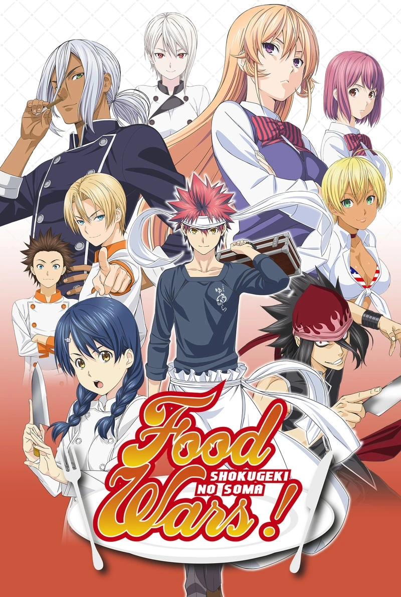

Shokugeki No Soma

SINOPSE
- Shokugeki no Soma, também conhecido como Food Wars!, é um anime baseado no mangá de Yūto Tsukuda (roteiro) e Shun Saeki (arte). A história mistura comédia, drama, culinária e ação, oferecendo um enredo único e divertido sobre um jovem cozinheiro determinado a se tornar o melhor do mundo.